美术方向
资源遵循 docs/art_direction.md 和 docs/art_asset_audit.md：柔和冬日色彩、主体集中在右下角、边缘透明羽化、UI 像小型桌面组件。动画以水波、浮漂、灯光和轻微收竿为主。
资源总览
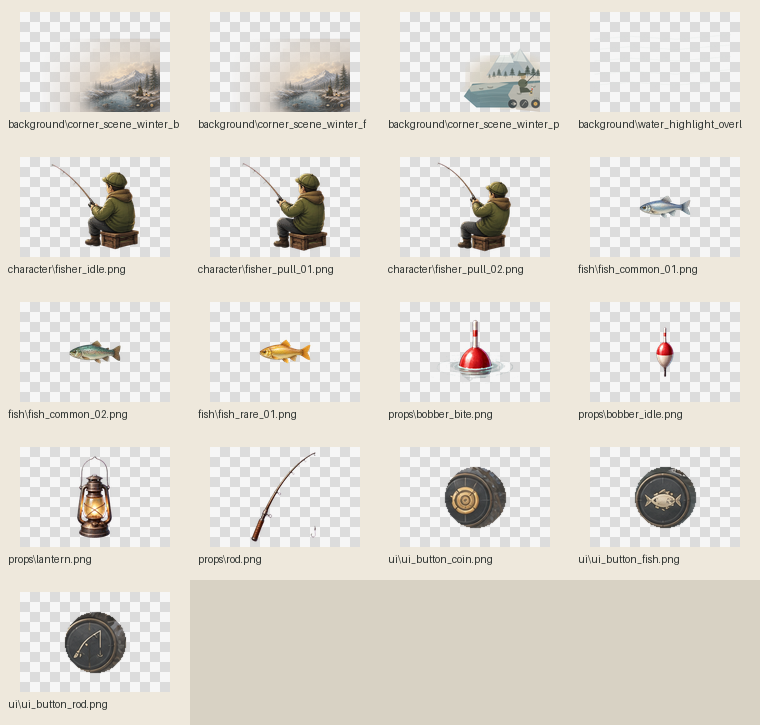
docs/img/art_asset_contact_sheet.png当前运行时美术资源的总览图，用于快速检查风格一致性和透明边缘质量。
主场景
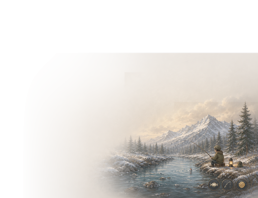
assets/art/background/corner_scene_winter_base.png520 x 400，带 alpha，正式 Godot 接入用主场景图，已按右下角透明窗口适配。
概念参考
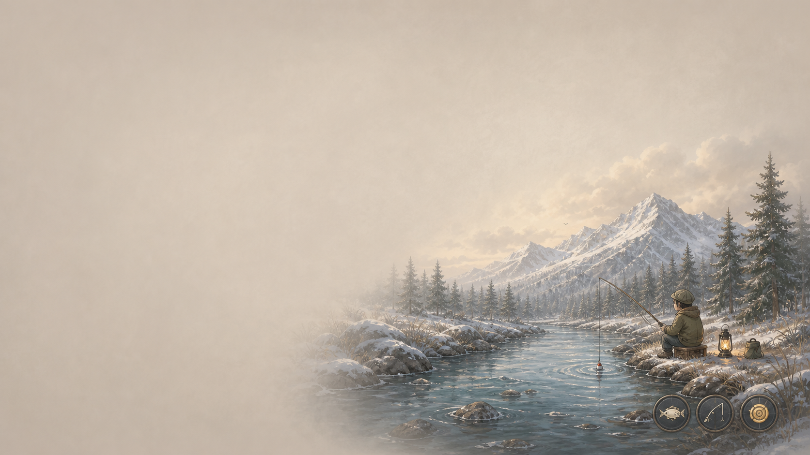
assets/art/source/corner_scene_winter_final_source.png正式主视觉源图，作为后续切图、局部重绘、动画拆层和同风格资源扩展的质量基准。
资源展示
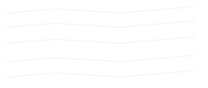
background/water_highlight_overlay.png水面循环高光叠层。

character/fisher_idle.png钓鱼人待机帧。
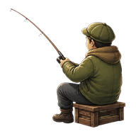
character/fisher_pull_01.png收竿动画帧。
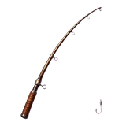
props/rod.png可旋转或独立挂接的钓竿。
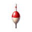
props/bobber_idle.png浮漂待机状态。
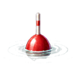
props/bobber_bite.png咬钩时下沉状态。
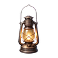
props/lantern.png小灯与暖色发光点。
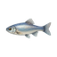
fish/fish_common_01.png普通鱼图标。
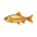
fish/fish_rare_01.png稀有鱼图标。

ui/ui_button_fish.png鱼获/图鉴入口。
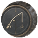
ui/ui_button_rod.png装备/钓竿入口。
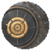
ui/ui_button_coin.png收益/商店入口。